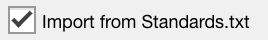
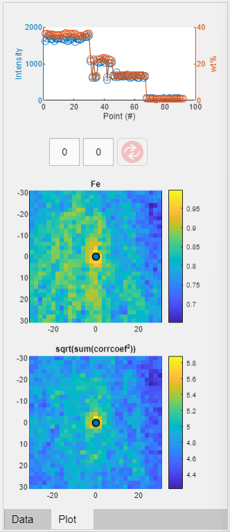
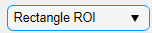
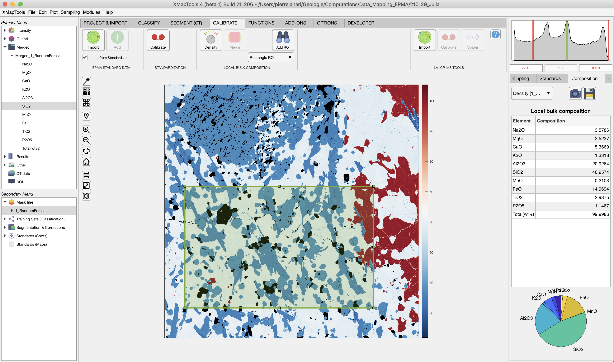
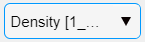
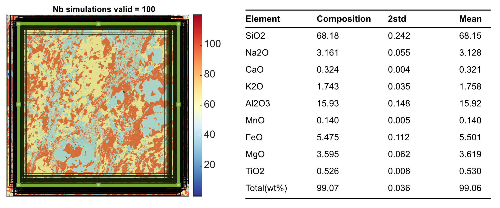

Help file version 14.11.2022 by M. Tedeschi & P. Lanari
Access XMapTools resources online
Table of content
EPMA
- Standard data: File Standards.txt | Import standards | Adjusting standard positions | Adding new standard point(s)
- Map calibration
- Local bulk compositions
LA-ICPMS
- Import standards
- Calibrate intensity data
- Generate spider plots
This help file contains a description of the tools available in the section Calibrate.
The following steps are required to convert raw data (e.g. X-ray maps or LA-ICPMS intensity maps) into maps of chemical composition:
The spot analyses used as internal standard in the calibration of EPMA data are referred to as "standards" in the following as they permit to define a calibration curve that correlates X-ray intensities to composition (e.g. expressed in oxide/element wt%).
It is necessary to import the standards from a standard file, check their positions and eventually correct them, check the chemical compositions and eventually create new standards. All these steps can be achieved in XMapTools 4.
The file Standards.txt contains (i) the map coordinates and (ii) the spot analyses used for the standardization. The map coordinates must be listed within a single row below the keyword >1. The oxide order is set below the keyword >2. X and Y must be the two last labels and must be listed in this specific order. The internal standards analyses are listed below the keyword >3 corresponding to the oxide order defined above (keyword >2).
>1 Here paste the image coordinates (Xmin Xmax Ymax Ymin)
56.739 57.239 43.691 43.371
>2 Here define the oxides order
SiO2 MgO FeO Al2O3 X Y
>3 Here paste the analyses
25.4800 11.260 29.050 21.1400 1.4800 68.310 39.999
52.9400 3.5300 3.0200 24.2300 0.0197 68.310 39.535
52.5800 3.6300 2.7900 24.7200 0.0195 68.331 39.511
The button Import (Import spots for Standards (from file)) is used to import standards from a file.
 The box Import from Standards.txt is selected by default allowing the file 'standards.txt' to be read automatically. If the file containing the standard data has a different name, unselect the box and it will be possible to select a file in the Pick a file pop-up window.
At the moment all standards need to be stored within a single file. It is not possible to import standards from different files as existing standards are eliminated when a new file is loaded.
Once loaded, standards are displayed on the main map with a label including the spot number and several plots are produced and shown in the category "Standards" of the live display module. You can get this global visualisation at any stage by selecting Standards (Spots) in the Secondary Menu. Three plots are produced if an element is selected in the primary menu, from top to bottom: a plot showing intensity/composition versus sequence of standard to visualise if there is a good match between the standard compositions and the intensity values of the matching pixels; two correlations maps, one for the selected element in the primary menu and a second one considering all elements.

Figure 1: Standard display available if the item "Standards (Spots)" is selected in the secondary menu.
Single standard can aslo be selected by unfolding Standards (Spots). In this case a table is displayed to show the standard compositionTo adjust the positions, display the map of a diagnostic element (Intensity) and select "Standards (Spots)" in the secondary menu. The two correlations maps should show a maximum value in yellow and the blue spot representing the current position should be centered on this optimum.
To adjust the position of the standards (all at once), put the mouse cursor over the blue circle showing up a transparent circle. Click on it and move the blue circle to the new position. The values in the two white field on top will be adjusted. Then click on the button Refresh (important) to update the standard positions. The Refresh button is only available when standard positions have been changed and nee to be saved.
Note: If no good correlation exists for a given element, the higher value of the second figure could not represent the optimal position.
It is possible to add new standard points directly in XMapTools. Note that these will not be saved to the file Standards.txt, and if the file is loaded again all changes will be lost.
 The button Add standard point adds a new standard at selected coordinates, set by clicking on the map after pressing the button. Compositional data can be filled directly in the table, when this standard is selected.
The button Add standard point adds a new standard at selected coordinates, set by clicking on the map after pressing the button. Compositional data can be filled directly in the table, when this standard is selected.
Procedure:
A calibration step also known as standardisation is required to convert intensity maps into compositional maps (Lanari et al. (2019)).
All minerals/objects are calibrated at the same time in XMapTools 4. Therefore it is required to selected a Mask File in the Secondary Menu to activate the button Calibrate.
The new approach implemented in XMapTools 4 provides a module for auto multi-phase calibration. Note that this is a preliminary version of the calibration assistant. We are expecting significant progress in the coming years once the algorithm is trained to face the most challenging situations. In the same time, please contact Pierre Lanari (pierre.lanari@geo.unibe.ch) if your case is not handled well by the algorithm.
The button Calibrate opens the Calibration Assistant for EPMA Data. This button is only available when a mask file is selected in the Secondary Menu.
The instructions on how to use the Calibration Assitant for EPMA are available in the help file accessible from the assistant.
A local bulk composition (abbreviation: LBC) represents the bulk composition of a spatial domain in a rock determined by integrating pixel compositions. As discussed in Lanari and Engi (2017), it is necessary to apply a density correction prior exporting any local bulk composition.
To export Local Bulk composition the following steps should be employed:
A density map is a map containing density data for each pixel of a map. It is calculated for a given mask file. Select first a mask file in the secondary menu.
Button Generate Density Map (from a mask file) allows a density map to be generated from the selected mask file. A mask file should be selected to activate the button . Pressing this button opens a window with predefined average density values (provided that the mineral name was recognised and a reference value available in the internal database; Wether full names of minerals in English are used, the mineral should be recognised).
Note: mineral density values can be obtained from the website webmineral.com
A Density map will be created and stored under the category Other in the Primary Menu with the name 'Density [maskfile_name]' (within brackets the name of the mask file used is shown). Each mask file requires the calculation of a density map.
Merged maps are maps for which all pixels hold a chemical composition. A merged map is automatically created by the standardisation function in XMapTools 4. If you need to create a merged map manually, follow the procedure bellow.
In the primary menu, unfold Quanti and select a quanti map (mineral). The button Merge (Merge Quanti Data) in the section Calibrate becomes available.
The button Merge (Merge Quanti Data) is used to merge quantified maps. In the window that pop-ups, select the quanti maps to be merged. Select'Ok' to generated the merged maps that will be stored in the category Merged.A local bulk composition can be calculated from a region-of-interest (ROI). The ROI can be a rectangle or a polygon. The density correction is automatically applied.
Select a merged map in the primary menu and display an element.
In the dropdown menu  select the wanted ROI shape: Retangle ROI or Polygon ROI.
When an ROI is available, the table containing the Local bulk composition appears in the live display module. The first column shows the element list, whereas compositions are listed in the column composition (unit: wt%). Below the table, a pie chart shows the repartition of the elements/oxides by weight.
The ROI can be edited and the composition values in the table and the pie chart are automatically updated. If it is not possible to edit or move the ROI, select XMapTools, press ctr (control) and try editing the ROI again.

Figure 2: Example of LBC determination using a rectangular ROI.The density map used is shown in a drop-down menu located in the live display module .
 The button Copy Data to clipboard may be used to copy the LBC data from the table.
The button Copy Data to clipboard may be used to copy the LBC data from the table.
 The button Save may be used to save the LBC data as a .txt file.
The button Save may be used to save the LBC data as a .txt file.
An uncertainty approximation similar to what is described in Lanari and Engi (2017) is available.
Select a merge map and create a Rectangle ROI. Define the number of simulations Sim (default 100) and the shift Px in pixel (default 20). The shape will be randomly displaced and resized using two random variables calculated from the shift value (assuming a Gaussian distribution and the value of Px as 1 sigma expressed in number of pixels). Click on the button calculate uncertainties using Monte-Carlo
The areas used to approximate an uncertainty are plotted in a new figure and the result is showed in the table of the live display module (Figure 3).
Figure 3: uncertainty estimation for LBC. The figure on the left show the distribution of the 100 areas used to determine the uncertainty (taken here as the standard deviation). The table on the right show the results. The column composition shows the original local bulk composition (selected ROI). The column 2std show the 2 standard deviation value (note that the distributions are usually Gaussian as shown by Lanari & Engi (2017)). The last column show the mean value of all compositions. This value should match the composition of the original ROI. If not, this means that a Gaussian distribution cannot be assumed for this element and the uncertainty is not correct.
Only standard maps generated by the Converter for LA-ICPMS data can be imported and used to calibrate LA-ICPMS maps in XMapTools 4.
The Button Import (Import Maps for Standards (from file)) is used to open a window in which the file 'MapStandards_Import.mat' must be selected.
Once standard data are imported they become available under the category Standards (Maps) in the Secondary Menu. Select an element to plot a map corresponding to the intensity of the primary standard material. Note that the standard composition cannot be shown.
As for EPMA, the calibration tool for LA-ICPMS data requires a mask file, so the calibrate button is only available when a mask file is selected in the Secondary Menu.
Button Calibrate (Open LA-ICP-MS Calibration Tools) opens the calibration assistant.
The instructions on how to use the Calibration Assitant for LA-ICPMS are available in the help file accessible from the assistant.
The button Spider (Open Spider Module) opens the module Spider Plot. This button is only available when a quanti file or any map within a quanti file is selected in the primary menu.
The instructions on how to use the Spider Module are available in the help file accessible from the module.